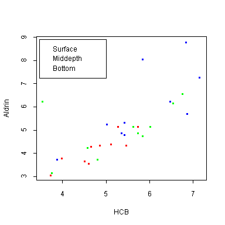

| / Home |
Keywords: correlation, one-way analysis of variance, outliers, analysis of covariance
Jaffe, Parker and Wilson have investigated the concentration of several hydrophobic organic substances (such as hexachlorobenzene, chlordane, heptachlor, aldrin, dieldrin, endrin) in the Wolf River in Tennessee. Measurements were taken downstream of an abandoned dump site that had previously been used by the pesticide industry to dispose of its waste products.
It was expected that these hydrophic substances might have a nonhomogeneous vertical distribution in the river because of differences in density between these compounds and water and because of the adsorption of these compounds on sediments, which could lead to higher concentrations on the bottom. It is important to check this hypothesis because the standard procedure of sampling at six-tenths of the depth could miss the bulk of these pollutants if the distribution were not uniform.
Grab samples were taken with a La Motte-Vandorn water sampler of 1 litre capacity at various depths of the river. This sampler consists of a horizontal plexiglas tube of 7 centimetres diameter and a plunger of each side which shuts the sampler when the sampler is at the desired depth. Ten surface, 10 mid-depth and 10 bottom samples were collected, all within a relatively short period. Until they were analysed the samples were stored in 1-quart mason jars at low temperature.
In the analysis of the samples, a 250-millilitre water sample was taken from each mason jar and was extracted with 1 millilitre of either hexanes or petroleum ether. A sample of the extract was then injected into a gas chromatograph and the output was compared against standards of known concentrations. The test procedure was repeated two more times, injecting different samples of the extract in the gas chromatograph. The average aldrin and hexachlorobenzene (HCB) concentrations (in nanograms per liter) in these 30 samples are given in the data.
Data File (tab-delimited text)
| Jaffe, P. R., Parker, F. L., and Wilson, D. J. (1982). Distribution of toxic substances in rivers. Journal of the Environmental Engineering Division, 108, 639-649. |
| Hogg, R. V., and Ledolter, J. (1992). Applied Statistics for Engineers and Physical Scientists. Macmillan, New York. Exercises 1.4-3 and 1.5-1. |

|
Home - About Us -
Contact Us Copyright © Gordon Smyth |